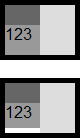
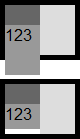
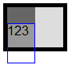

RE8017: IE Firefox Opera 的混杂模式对于百分比单位高度的单元格内子元素的百分比高度计算错误
标准参考
根据 CSS2.1 规范中关于表格的高度算法中的描述，一旦 UA 获得行内所有单元格，就可以计算 'table-row' 元素框的高度：它是行内指定的 'height' 最大值和单元格要求的最小高度（MIN）的较大者。如果 'table-row' 的 'height' 值为 'auto'，则意味着计算出的高度应为 MIN。MIN 取决于单元格框高度和单元格框的对齐（很类似于行框的高度计算）。如果指定表格行和行组 'height' 的百分比，CSS2.1 并未定义百分比应参照哪个高度。
而对于一般元素，当指定一个百分比宽度时，百分比的计算基于生成框的包含块的宽度。如果包含块的高度没有明确指定（如依赖于其内容高度），并且这个元素不是绝对定位的，那么高度计算为 'auto'。
关于 表格的高度算法 以及 百分比高度 的详细信息，请参考 CSS2.1 规范 17.5.3 Table height algorithms 及 10.5 Content height: the 'height' property 中的内容。
问题描述
在 IE Firefox Opera 的混杂模式中，若 TD 元素的高度为百分比，其子元素的高度也为百分比，则其子元素的高度计算将会出现错误。
造成的影响
若在表格中使用了百分比高度，并且页面运行在混杂模式下，则可能会带来兼容性问题，影响表格最终布局。
受影响的浏览器
| IE6(Q) IE7(Q) IE8(Q) | |
|---|---|
| Firefox(Q) Opera(Q) |
问题分析
分析以下代码：
<table cellpadding="0" cellspacing="0" style="width:100px; border:5px solid black;">
<tr>
<td id="td1-1" style="width:50%; height:100%; vertical-align:top;">
<div id="div1-1" style="height:20px; background:#666;"></div>
<div id="div1-2" style="height:100%; background:#999;">123</div>
</td>
<td id="td1-2" style="width:50%; height:100%;">
<div id="div1-3" style="height:50px; background:#DDD;"></div>
</td>
</tr>
</table>
<br />
<table cellpadding="0" cellspacing="0" style="width:100px; border:5px solid black;">
<tr>
<td id="td2-1" style="width:50%; height:100%; vertical-align:top;">
<div id="div2-1" style="height:20px; background:#666;"></div>
<div id="div2-2" style="height:50%; background:#999;">123</div>
</td>
<td id="td2-2" style="width:50%; height:100%;">
<div id="div2-3" style="height:50px; background:#DDD;"></div>
</td>
</tr>
</table>
上面代码分为两组，每组均为表格元素分为左右两列，仅一行，其中左列【td1-1】包含两个 DIV 元素，一个【div1-2】高度为 20px，一个【div1-2】高度为百分比单位。右列【td1-2】包含一个 DIV 元素【div1-3】，高度为 50px。两个 TD 元素【td1-1】与【td1-2】的高度均为 100%。两组的区别仅为【div1-2】的百分比高度为 100% 及 50%。
这段代码在各浏览器中运行效果如下：
| IE(Q) | Firefox(Q) Opera(Q) | IE(S) Firefox(S) Opera(S) Chrome Safari |
|---|---|---|
|  |  |  |
可见，对于最终表格元素的高度计算，各浏览器均计算为 60px。差异出现在对【div1-2】及【div2-2】的高度计算上，

- 在 IE6(Q) IE7(Q) IE8(Q) 中，如左图所示，浏览器在获得当前行的最大高度 50px 后，【td1-1】与【td1-2】的计算高度均为 50px。此时浏览器将【div1-2】的包含块【td1-1】的计算高度作为其百分比高度的参照值，然而在 IE6(Q) IE7(Q) IE8(Q) 中存在“溢出单元格的内容会被剪裁”的 Bug，所以对于第一组，实际上【div1-2】的高度与 Firefox 中一样高，只是溢出单元格的部分被裁切了而呈现出截图的效果，通过浏览器开发人员工具也可以清楚的看到【div1-2】的实际高度。
- 在 Firefox(Q) Opera(Q) 中，情况与 IE(Q) 中类似，只是浏览器正常的渲染了溢出部分。
- 在 其他浏览器 中，【div1-2】的百分比高度被忽略为 'auto' 处理，所以第一组和第二组在效果是没有任何区别。
解决方案
使用标准模式——<!DOCTYPE html>；尽量避免在表格及块级元素上使用百分比高度。
参见
知识库
相关问题
测试环境
| 操作系统版本: | Windows 7 Ultimate build 7600 |
|---|---|
| 浏览器版本: |
IE6 IE7 IE8 Firefox 3.6.3 Chrome 6.0.422.0 dev Safari 4.0.5 Opera 10.53 |
| 测试页面: | td_div_percent_height.html |
| 本文更新时间: | 2010-08-09 |
关键字
TD height percent TABLE 表格 单元格 百分比 高度